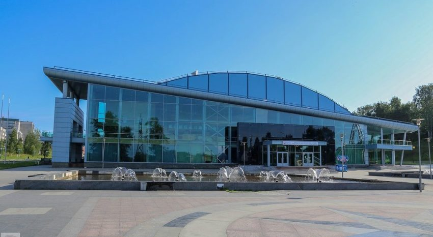

Top three activities to do at Kondopoga
Art Palace
The organ hall is a branch of the Karelian State Philharmonic, the largest organization in the republic, which is actively involved in concert activities.
Carillons
The carillon is located in the city center at the intersection of Proletarskaya Street and Gorky Street. It is an original structure with 18 bells and a clock.

Ice Palace
The most modern sports facility in the city. The palace has impressive dimensions and is one of the most outstanding and best equipped ice arenas in the country.